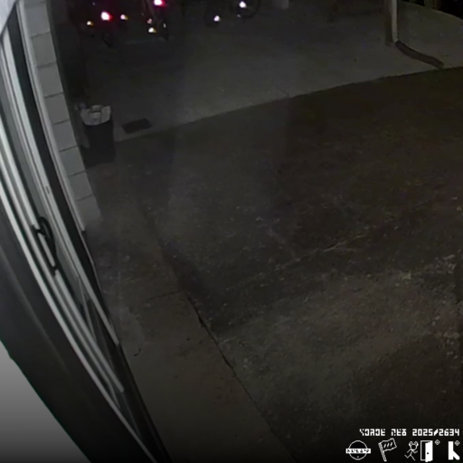

rainbow text = big project!
| project | description | created | last updated | links |
|---|---|---|---|---|
| AOS 1 (ARCHIVED) | AOS shell version 1 | Mar. 2020 | Aug. 17, 2021 | Source |
| AOS 2 (ARCHIVED) | AOS shell version 2 | Apr. 3, 2020 | Jan. 13, 2021 | Source |
| nanoscrape | teeny tiny web scraper | Apr. 7, 2021 | Apr. 12, 2021 | Source |
| potscr | esoteric programming language | Aug. 27, 2021 | Nov. 29, 2021 |
Website Source |
| loom | file encryptor | Mar. 29, 2021 | Jan. 11, 2023 | Source |
| nanoweb | pyqt5 browser | Jan. 20, 2022 | Mar. 31, 2022 | Source |
| potscr-playdate | potatoscript for the playdate console | Mar. 23, 2022 | Mar. 28, 2022 | Source |
| tAoHtH | the adventures of horse the horse | Apr. 12, 2022 | Jul. 6, 2022 |
Download Source |
| musik | simple music player for playdate | Aug. 13, 2022 | Feb. 23, 2025 |
Download Source |
| AOS-GUI | a graphical shell for modern computers | Dec. 13, 2022 | Dec. 21, 2023 | Source |
| psi | playdate serial interface | Jan. 6, 2023 | Jan. 9, 2023 |
Download Source |
| CS-16 | synthesizer/sampler for playdate | May. 31, 2023 | Jan. 20, 2025 |
Download Source |
| fewatsu | electronic manual library for playdate | Jul. 5, 2024 | Oct. 26, 2025 |
Download Source |
| Vixen(OS) | operating system designed for i386 processors | Sep. 28, 2024 | Apr. 7, 2025 | Source |
| op1-glitter | teenage engineering op-1 color scheme modifier | Nov. 24, 2024 | Apr. 4, 2025 | Source |
| vonave | variable-bit fantasy computer | Feb. 14, 2025 | Apr. 23, 2025 | Source |
All of the music below is under the independent media label Sunset Foxtrots, and the Creative Commons BY-SA 4.0 License.
| title | cover | release date | songs | length | links |
|---|---|---|---|---|---|
| Ruleset |  | Jul. 3, 2025 | 1 | 3:09 |
Tidal Spotify |
| Xovanaphobia |  |
Oct. 17, 2025 | 10 | 29:07 |
Tidal Spotify Bandcamp |